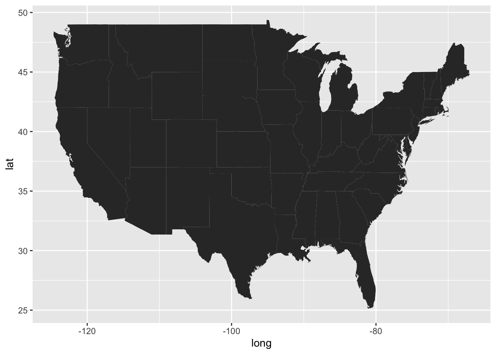
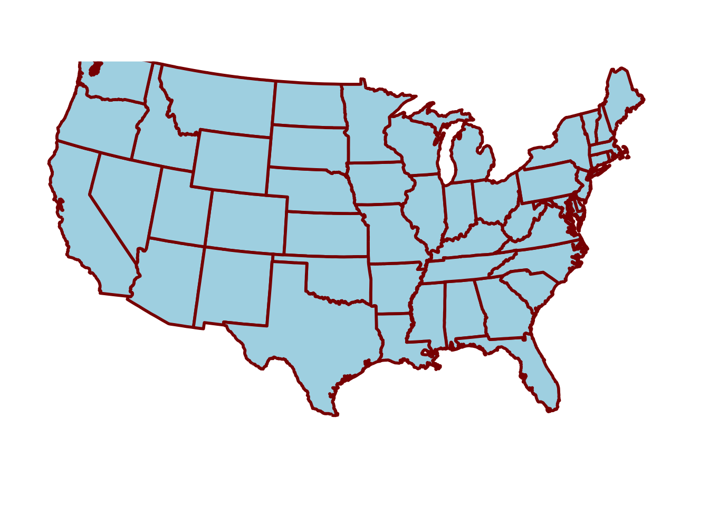

# Only run this if you have not yet installed the tidyverse
install.packages("tidyverse")Plotting geographical maps in R: part I
Using ggplot to make maps and adding custom points to them.
maps
ggplot2
dataviz
1 Intro
Today is the first of three Code Club sessions on making maps with R. We will:
- Plot maps of various regions, learn how to format them, and add points (part I, today)
- Make “choropleth” maps, where areas are colored depending on a variable like mean temperature (part II)
- Use different map backgrounds, like those of Google Maps, and make interactive maps (part III)
This content builds to some extent on the previous series of sessions on making plots with ggplot2, as we will mainly use this package to make maps.
Setting up
We’ll load the entire tidyverse as we’ll be using functions from dplyr besides today’s main pacakge, ggplot2. You probably have the tidyverse installed already, but if not, run:
And to actually load it:
library(tidyverse)── Attaching core tidyverse packages ──────────────────────── tidyverse 2.0.0 ──
✔ dplyr 1.1.4 ✔ readr 2.1.5
✔ forcats 1.0.0 ✔ stringr 1.5.1
✔ ggplot2 3.5.1 ✔ tibble 3.2.1
✔ lubridate 1.9.4 ✔ tidyr 1.3.1
✔ purrr 1.0.4
── Conflicts ────────────────────────────────────────── tidyverse_conflicts() ──
✖ dplyr::filter() masks stats::filter()
✖ dplyr::lag() masks stats::lag()
ℹ Use the conflicted package (<http://conflicted.r-lib.org/>) to force all conflicts to become errors2 Basic maps
Map data to draw states in the US
When plotting maps, we typically need a base map that has outlines like administrative borders and coastlines. For today’s maps, we will get this type of map data through ggplot2’s map_data() function.
Let’s get a dataframe with the outlines of the lower 48 states of the US (i.e. no Alaska or Hawaii), and take a look at what it contains:
states <- map_data(map = "state")
head(states) long lat group order region subregion
1 -87.46201 30.38968 1 1 alabama <NA>
2 -87.48493 30.37249 1 2 alabama <NA>
3 -87.52503 30.37249 1 3 alabama <NA>
4 -87.53076 30.33239 1 4 alabama <NA>
5 -87.57087 30.32665 1 5 alabama <NA>
6 -87.58806 30.32665 1 6 alabama <NA>Each row in this dataframe makes up a single point along the outline of a state:
- The
longandlatcolumns contain longitudes and latitudes in decimal format. In the US, all longitudes are negative as we are west of the prime meridian that runs through the UK, and all latitudes are positive as we are north of the equator. - The
groupcolumn groups the rows (points) into shapes/“polygons” that outline the borders of a state, or in some cases, parts of a state1. (This is complemented by theordercolumn which provides the drawing order.) - The
regioncolumn contains the state name.

and longitude (right) the position along the east-west axis. Source: Wikipedia
{kind=link}
Our first map
To make a first map, we pass our dataframe to ggplot as per usual, and then use the geom geom_polygon() to draw the polygons that make up the states, mapping:
- Longitude (
long, east-west axis) to thexaesthetic - Latitude (
lat, north-south axis) to theyaesthetic
ggplot(states) +
geom_polygon(aes(x = long, y = lat))
That doesn’t look so good – what could be the problem here?
We need to tell ggplot which groups of points together form discrete shapes like an individual state’s outline, and can do so by additionally mapping our data frame’s group column to the plot’s group aesthetic:
ggplot(states) +
geom_polygon(aes(x = long, y = lat, group = group))Much better!
Map projections
When creating maps, especially for large geographic areas like the world, continents, or big countries like the US, you need to consider the “projection”. We will not go into the details of map projections here, but will note that:
- Different projections are suitable for different geographic areas
- The ggplot function
coord_sf()sets a geographic coordinate system for the plot and with it’s argumentcrs(Coordinate Reference System, CRS), we can set the specific projection. - CRS projections have numbers, e.g.:
5070is a projection suitable for the lower 484326is what GPS coordinates like those in ourstatesdataframe are based on
- Below, we’ll use
coord_sf(crs = 5070, default_crs = 4326), to state that:- We want to plot the map with the
5070CRS - Our data has
4326-style GPS coordinates
- We want to plot the map with the
In the map below, note the curvature of especially the latitudinal lines, which we didn’t have before:
ggplot(states) +
geom_polygon(aes(x = long, y = lat, group = group)) +
coord_sf(crs = 5070, default_crs = 4326)
Map theming
With maps, more basic themes like theme_minimal() or theme_void() tend to look better since we’re often not that interested in the background panel and the axes.
- With
theme_minimal():
# Code is the same as above, just with `theme_minimal()` added:
ggplot(states) +
geom_polygon(aes(x = long, y = lat, group = group)) +
coord_sf(crs = 5070, default_crs = 4326) +
theme_minimal()
- With
theme_void(), which omits the plotting panel and axis altogether:
# Code is the same as above, just with `theme_void()` added:
ggplot(states) +
geom_polygon(aes(x = long, y = lat, group = group)) +
coord_sf(crs = 5070, default_crs = 4326) +
theme_void()
When you make many plots that should have similar theming, a nice ggplot trick is to set an overall theme for the entire session with the theme_set() function, and optionally modify that with the theme_update() function. Let’s do that here, so we don’t have to keep adding the theme_void() line to every plot — and we’re also saying that we want any legends above the plot rather than besides it:
theme_set(theme_void())
theme_update(legend.position = "top")We may also want to change the fill and outline colors of the states — and let’s save this map as an object p so we can build on it in the next section:
p <- ggplot(states) +
geom_polygon(aes(x = long, y = lat, group = group),
fill = "grey85", color = "grey40", linewidth = 0.1) +
coord_sf(crs = 5070, default_crs = 4326)
p
Exercise 1
A) Create a map that does not have visible state lines. While you’re at it, you can also play around with the settings inside geom_polygon() to get a map look that you like — or one that you hate, just for the fun of it. And how about a map with a blue panel background? After all, most (but not all) of the area surrounding the US is water.
Click to see some examples
- You can make sure that the state lines aren’t visible by providing the same color for the
colorandfillaesthetics:
ggplot(states) +
geom_polygon(aes(x = long, y = lat, group = group),
fill = "palevioletred", color = "palevioletred") +
coord_sf(crs = 5070, default_crs = 4326)
- Why should the map look good, anyway?
ggplot(states) +
geom_polygon(aes(x = long, y = lat, group = group),
fill = "lightblue", color = "darkred", linewidth = 1) +
coord_sf(crs = 5070, default_crs = 4326)
- A blue panel background:
ggplot(states) +
geom_polygon(aes(x = long, y = lat, group = group),
fill = "grey85", color = "grey40", linewidth = 0.1) +
coord_sf(crs = 5070, default_crs = 4326) +
theme(panel.background = element_rect(fill = "dodgerblue", color = "grey20"))
B) Still using the states data frame as a starting point, can you make a map that only shows Ohio? And/or another state or combination of neighboring states that you would like to Zoom in on?
Click to see hints
Rather than trying to zoom in by setting different axis limits, try to use
filter()to subsetstatesto only Ohio (and/or other states) before you pass the data toggplot().When plotting individual states, our current CFS does not look that great as states are “tilted”. When you’re not interested in looking up a correct projection, just adding
coord_sf()with no arguments can give a reasonable look.
Click to see some examples
- What are the state names like? Turns out they are all in lowercase:
unique(states$region) [1] "alabama" "arizona" "arkansas"
[4] "california" "colorado" "connecticut"
[7] "delaware" "district of columbia" "florida"
[10] "georgia" "idaho" "illinois"
[13] "indiana" "iowa" "kansas"
[16] "kentucky" "louisiana" "maine"
[19] "maryland" "massachusetts" "michigan"
[22] "minnesota" "mississippi" "missouri"
[25] "montana" "nebraska" "nevada"
[28] "new hampshire" "new jersey" "new mexico"
[31] "new york" "north carolina" "north dakota"
[34] "ohio" "oklahoma" "oregon"
[37] "pennsylvania" "rhode island" "south carolina"
[40] "south dakota" "tennessee" "texas"
[43] "utah" "vermont" "virginia"
[46] "washington" "west virginia" "wisconsin"
[49] "wyoming" - Plotting only Ohio – first use
filter()to only keep the outline for the state of Ohio, then plot like before:
states |>
filter(region == "ohio") |>
ggplot() +
geom_polygon(aes(x = long, y = lat, group = group),
fill = "skyblue", color = "grey40", linewidth = 0.5) +
coord_sf()
- Plotting Ohio along with two neighboring states:
states |>
filter(region %in% c("ohio", "indiana", "michigan")) |>
ggplot() +
geom_polygon(aes(x = long, y = lat, group = group),
fill = "azure4", color = "grey40", linewidth = 0.5) +
coord_sf()
Zooming in
In the exercise above, we plotted only Ohio by filtering the input data frame. Alternatively, we may want to zoom in to a region without considering administrative borders. We can do so with the xlim and ylim arguments of coord_sf():
ggplot(states) +
geom_polygon(aes(x = long, y = lat, group = group),
fill = "grey85", color = "grey40", linewidth = 0.2) +
# Set the x and y limits inside coord_sf:
coord_sf(xlim = c(-79, -89), ylim = c(35, 45)) +
# We may now want to draw a border around the plot since we're cutting of
# landmasses:
theme(panel.border = element_rect(fill = NA, color = "grey20", linewidth = 0.5))3 Adding points and text to maps
Adding single points and bits of text
We can add points to a map with the familiar geom geom_point(). We have used this to make scatterplots, but it can plot single points too.
As a first example, we’ll just add a single point to show where the city of Columbus is, and set its coordinates on the fly (note, we’re not using aes()). We’ll use the OSU scarlet color via it’s Hex code as the color for the point:
p +
geom_point(x = -82.99, y = 39.99, colour = "#ba0c2f", size = 4)We can pretty easily add arbitrary text in a similar fashion with geom_text(), in which we specify the text we want to print using the label argument — note that I’m subtracting 1 from the latitude so the text ends up a bit below the point and not right on top of it:
p +
geom_point(x = -82.99, y = 39.99, colour = "#ba0c2f", size = 4) +
geom_text(x = -82.99, y = 39.99 - 1, label = "Columbus", size = 4)
Adding a set of points from a data frame
In your research, you may want to make a map that plots sampling locations. As a simple fictional example, we can create a dataframe with four sampling locations, a grouping factor (season), and a column with a numerical result for each location (yield):
locations <- data.frame(
location = c("L01", "L02", "L03", "L04"),
long = c(-80, -100, -90, -110),
lat = c(35, 33, 45, 43),
season = c("winter", "winter", "summer", "summer"),
yield = c(21, 94, 39, 62)
)
locations location long lat season yield
1 L01 -80 35 winter 21
2 L02 -100 33 winter 94
3 L03 -90 45 summer 39
4 L04 -110 43 summer 62Now, we can add a layer to our saved plot p with the sampling locations — note that:
- We are giving
geom_point()“it’s own” data set with thedata =argument - We map the
fillaesthetic to theseasoncolumn so we can distinguish samples from different seasons - We use point shape 21 (see this overview of R point shapes) which allows for a
fillcolor as well as an outline color (the latter viacolor):
p +
geom_point(data = locations,
aes(x = long, y = lat, fill = season),
size = 4, shape = 21)
Exercise 2
Build on the previous map by making the appearance of the sampling location points reflect the values in the yield column. For example, higher yields could produce larger points, or the fill color of the points could depend on the yield.
Click here for some hints
To make points vary in size, use the
sizeaestheticaes(size = ...)To make points vary in fill color, use the
fillaesthetic and then switch to a different aesthetic forseason, like pointshape.
Click here for possible solutions with point size
p +
geom_point(data = locations,
aes(x = long, y = lat, fill = season, size = yield),
shape = 21)
That produces quite a small point for the location with the lowest yield – we could restrict the size range of the points like so:
p +
geom_point(data = locations,
aes(x = long, y = lat, fill = season, size = yield),
shape = 21) +
scale_size_continuous(range = c(2.5, 6))
Click here for possible solutions with point fill color
If we want to use fill color instead for yield, we’ll need another aesthetic for season, e.g. shape:
p +
geom_point(data = locations,
aes(x = long, y = lat, shape = season, fill = yield),
size = 4) +
# Make sure the shapes support a fill color (the default ones don't):
scale_shape_manual(values = c(21, 23))
We can change the fill color scale to one of the viridis color scales:
p +
geom_point(data = locations,
aes(x = long, y = lat, shape = season, fill = yield),
size = 4) +
# Make sure the shapes support a fill color (the default ones don't):
scale_shape_manual(values = c(21, 23)) +
scale_fill_viridis_c(option = "inferno")
4 More examples — with Ohio
The background map we’ve been working with so far doesn’t have county lines. Especially if we want to make a map of single state like Ohio, those would come in handy.
Getting county-level map data for just Ohio
We can get a county-level map of the entire United States using map_data(map = "county"):
map_data(map = "county") |> head() long lat group order region subregion
1 -86.50517 32.34920 1 1 alabama autauga
2 -86.53382 32.35493 1 2 alabama autauga
3 -86.54527 32.36639 1 3 alabama autauga
4 -86.55673 32.37785 1 4 alabama autauga
5 -86.57966 32.38357 1 5 alabama autauga
6 -86.59111 32.37785 1 6 alabama autaugaLet’s filter that so we are only left with Ohio:
ohio <- map_data(map = "county") |>
filter(region == "ohio")
head(ohio) long lat group order region subregion
1 -83.66902 39.02989 2012 59960 ohio adams
2 -83.56590 39.02989 2012 59961 ohio adams
3 -83.37109 39.06426 2012 59962 ohio adams
4 -83.30806 39.06426 2012 59963 ohio adams
5 -83.30233 39.05280 2012 59964 ohio adams
6 -83.25649 39.01842 2012 59965 ohio adamsLet’s get a feel for what’s in the resulting dataframe — the only region (i.e. state) should be ohio, and subregions are counties:
ohio |> count(region) region n
1 ohio 1427ohio |> count(subregion) |> head() subregion n
1 adams 17
2 allen 16
3 ashland 17
4 ashtabula 11
5 athens 19
6 auglaize 16The number of entries for each county is simply how many points make up the lines. Those numbers are quite low making this a relatively low-resolution map — but good enough for our purposes.
A base map of Ohio
Now we are ready to plot our map of Ohio:
p_ohio <- ggplot(ohio) +
geom_polygon(aes(x = long, y = lat, group = group),
fill = "grey90", color = "grey70") +
coord_sf()
p_ohio
We can now use this as a base map to plot points on, like we did above with the US map. Or we could create a map where counties differ in fill color depending on some variable, like the number of farms or eagle nests in each county.
Adding county names
For now, without pulling in additional data, say that we want to print the county names in the map.
To do so, we will start by transforming the county names to “Title Case” from the original all-lowercase using the tools::toTitleCase() function — and let’s also use the name county (instead of subregion for that new column):
ohio <- ohio |> mutate(county = tools::toTitleCase(subregion))We’d also need a single pair of coordinates for each county, because we only want to print each county name once. A quick-and-dirty way to get those is to simply compute the mean of the longitude and latitude of the points in the dataframe that make up the borders.
county_coords <- ohio |>
summarize(long = mean(long), lat = mean(lat), .by = county)
head(county_coords) county long lat
1 Adams -83.46984 38.82059
2 Allen -84.12130 40.79424
3 Ashland -82.29662 40.86571
4 Ashtabula -80.75319 41.80821
5 Athens -81.98483 39.35768
6 Auglaize -84.20080 40.54607Now, we can add the county labels to the plot:
p_ohio +
geom_text(data = county_coords,
aes(x = long, y = lat, label = county),
color = "darkblue", size = 3)
That’s not perfect (those “mean coordinates” are not actual centroids), but not bad for a quick-and-dirty attempt!
Exercise 3
A) OSU has campuses in the following places:
- Columbus, Franklin County
- Wooster, Wayne County
- Lima, Allen County
- Mansfield, Richland County
- Marion, Marion County
- Newark, Licking County
Can you create a map similar to our previous one, but then with only these 6 counties labeled by name? Like in the example below:

Click here for some hints
You’ll have to
filter()thecounty_coordsdata frame to only keep the counties of interest.After that, the plotting code will be identical to that for the previous map, just make sure you pass the correct, filtered data frame.
If you’re printing the names of the counties, then you won’t want a
filllegend: you can turn that off usingguides(fill = "none").
Click here for the solution
- First we filter the
county_coordsto only keep our focal counties, and store the result in a new data frame:
focal_counties <- c("Franklin", "Wayne", "Allen",
"Richland", "Marion", "Licking")
county_coords_sel <- county_coords |>
filter(county %in% focal_counties)- We use the same plotting code as before, but now with
county_coords_sel:
p_ohio +
geom_text(data = county_coords_sel,
aes(x = long, y = lat, label = county),
color = "darkblue", size = 4)
B) (Bonus) Can you produce a map that has a different fill color for each county, like the one below?

Click here for some hints
You’ll want to keep the original
geom_polygon()layer with the gray counties, and then add a secondgeom_polygon()layer just with the focal counties.In that second layer, map the
countycolumn to thefillaesthetic.Make sure to add the
geom_text()layer last, or it would be masked by the polygon layer.
Click here for the solution
p_ohio +
geom_polygon(data = ohio |> filter(county %in% focal_counties),
aes(x = long, y = lat, group = group, fill = county),
color = "grey70") +
geom_text(data = county_coords_sel,
aes(x = long, y = lat, label = county),
color = "darkblue", size = 4) +
guides(fill = "none")
Footnotes
Michigan for example, has a polygon for the lower part of the state, and one for the Upper Peninsula.↩︎